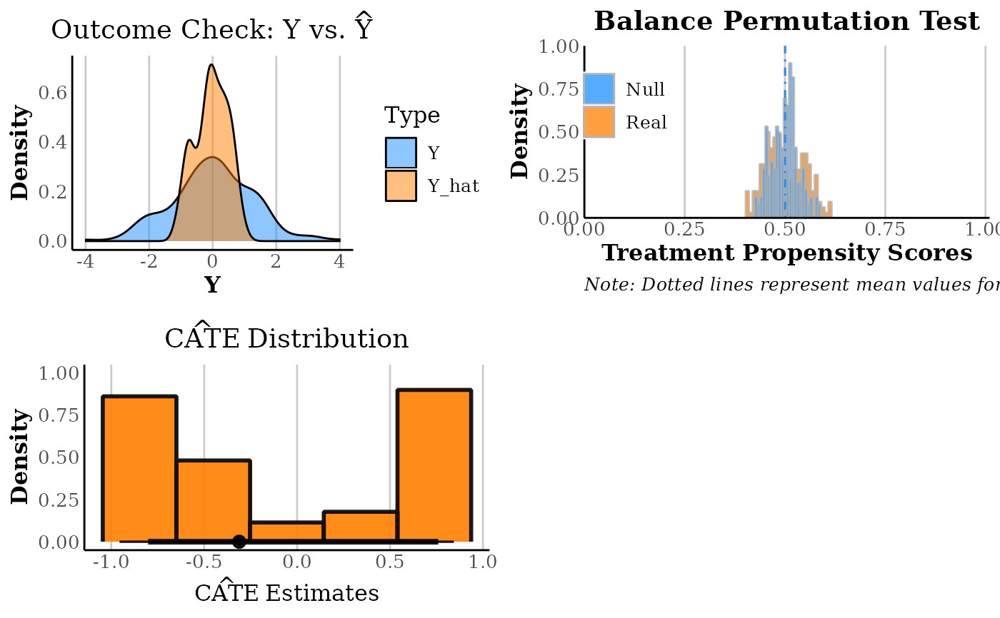
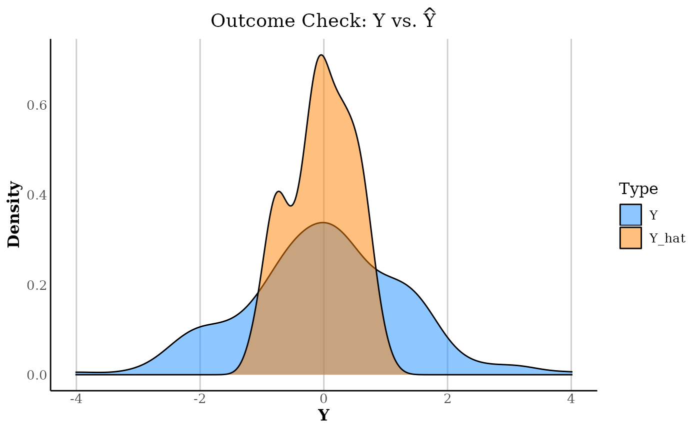
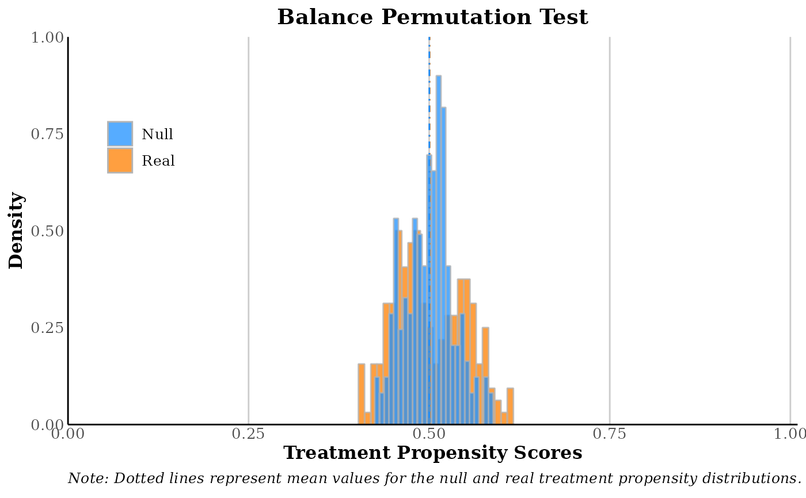
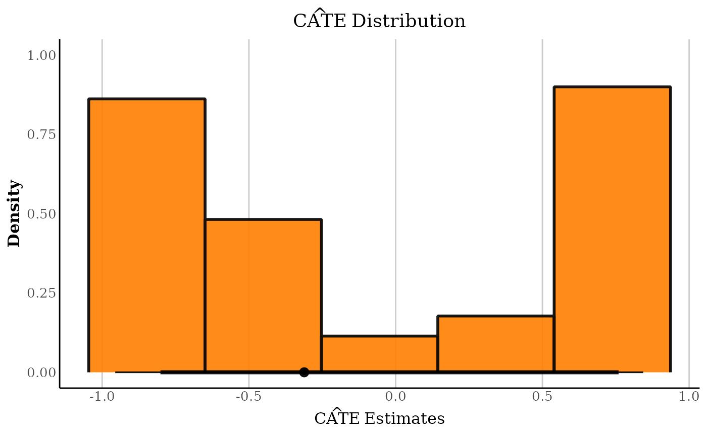

Generates a multi-panel diagnostics figure for a causal forest model, covering outcome model fit, treatment balance, and CATE distribution.
Value
A list containing the following elements:
- out_check
A ggplot2 object showing the density plot comparing real Y and predicted Y.
- bal_perm_plot
A ggplot2 object showing the treatment propensity plot.
- cate_distro_plot
A ggplot2 object showing the density plot of the distribution of CATEs.
- rmse_out
The Root Mean Squared Error (RMSE) for the outcome model predictions. Also printed to the console.
Details
The figure contains three panels:
Outcome check (top-left): Overlays the density of the observed outcome
Yagainst the forest's outcome model predictionsY.hat. Good overlap indicates a well-specified outcome model. The RMSE is printed to the console.Balance permutation test (top-right): Uses
MLbalance::random_check()to test whether the treatment assignmentWis predictable from the covariatesX. A non-significant result (large p-value) is consistent with random or as-if-random assignment. See Gagnon-Bartsch and Shem-Tov (2019).CATE distribution (bottom): Histogram with interval summary of the out-of-bag CATE estimates. A tight distribution centered at zero suggests little heterogeneity; a spread distribution suggests meaningful variation in treatment effects across units.
References
Gagnon-Bartsch, J. and Shem-Tov, Y. (2019). The Classification Permutation Test: A Flexible Approach to Testing for Covariate Imbalance in Observational and Experimental Studies. doi:10.48550/arXiv.1903.07841
See also
summary.causal_forest() for a text-based summary,
plot.causal_forest() to call this via plot(cf, type = "diag").
Examples
library(grf)
set.seed(1995)
n <- 200; p <- 5
X <- matrix(rnorm(n * p), n, p)
W <- rbinom(n, 1, 0.5)
Y <- X[, 1] * W + rnorm(n)
cf <- causal_forest(X, Y, W, num.trees = 100)
plot_diag(cf)
#> RMSE for outcome model: 1.136845
#> No Simulated Assignment Vector Provided, Null Distribution Generated Using Permutated Treatment Assignment.

#> $outcome_check_plot

#>
#> $treatment_propensity_plot

#>
#> $cates_distribution_plot

#>
#> $rmse_out
#> [1] 1.136845
#>